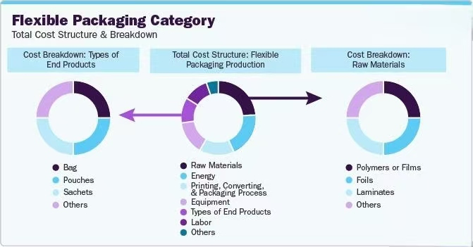

Cost-Optimization Strategies: How to Save on Packaging Without Sacrificing Quality

Packaging costs rarely sit still. Film resins fluctuate, freight rates shift, regulatory requirements add testing and documentation, and customers expect more sustainable structures — often at the same or lower prices.
The mistake many brands make is treating cost reduction as a single decision: switch to a thinner film, change supplier, or reduce print quality. Real cost optimization is more systematic. It comes from understanding where cost actually sits in the total packaging value chain — and then making targeted changes that protect quality where it matters.
This guide breaks down the practical levers for reducing packaging costs without compromising product protection, shelf performance, or compliance.
1. Where Packaging Cost Actually Comes From
Before optimizing, it helps to see the full cost picture. Packaging cost is not just the price per pouch. It includes:
- Material cost: The film structure, resin grades, barrier layers, coatings, and printing inks.
- Conversion cost: Printing, lamination, slitting, bag-making, and the labor and energy behind each step.
- Quality cost: Testing, sampling, defect rates, and rework.
- Logistics cost: Volume, weight, dimensional weight charges, and storage.
- Compliance cost: Regulatory testing, documentation, and certification for target markets.
Most cost-reduction conversations focus only on material price. But the biggest savings often come from reducing waste, right-sizing the structure, and avoiding quality failures downstream.
2. Right-Sizing the Structure, Not Just the Film
One of the most effective cost levers is matching the structure to the actual protection the product needs — no more, no less.
🔴 What to review:
- Barrier layers: Is the oxygen and moisture barrier actually required for the full shelf life? For short-shelf-life or dry products, a high-barrier structure may be overkill.
- Film thickness: Can the gauge be reduced while maintaining drop and compression performance? A structured down-gauging test is far safer than a blind reduction.
- Print coverage: Full-surface printing costs more than spot or partial coverage. White flood coats, in particular, add significant ink and coating weight.
- Zippers and closures: High-end zippers, spouts, and valves add cost. Confirm they are genuinely needed for the customer's use case.
- Substrate choice: For products that do not require high barrier, a simpler structure can perform just as well at a lower cost.
🔴 Practical example:
A dry snack product with a 6-month shelf life may be over-engineered with a metallized high-barrier structure if a standard clear structure would maintain quality. The barrier adds material cost without delivering a benefit the product actually needs. A shelf-life test confirms the right answer before any change is made.
3. Design for Manufacturing Efficiency
Packaging that is difficult to produce costs more to produce. Small design decisions have a direct impact on line speed, waste, and defect rates.
🔴 Key considerations:
- Seal geometry: Wide, well-designed seal areas reduce leak rates and allow faster line speeds. Poor seal design increases scrap and rework.
- Tear notches and laser scoring: Consistent, controlled opening features reduce customer complaints and returns.
- Print registration: Designs with tight registration requirements slow down printing and increase waste. Simplify where possible.
- Film stiffness and COF: Films that run smoothly on filling lines reduce downtime. This is a material-selection decision with direct cost impact.
- Standardization: Using a smaller number of film structures across multiple SKUs reduces inventory complexity, minimum order quantities, and changeover time.
4. Reduce Material Waste in Production
Material waste is often the hidden cost that outweighs any unit-price negotiation.
🔴 Sources of waste:
- Trim waste: Excess film trimmed during bag-making. Optimizing bag layout on the web reduces trim.
- Start-up waste: Film and printed material lost during changeovers and line start-ups. Standardizing structures and reducing changeover frequency lowers this cost.
- Defect waste: Failed seals, print defects, and delamination. These are quality issues that become cost issues.
- Over-ordering: Ordering more than needed to hit minimum order quantities leads to excess inventory, storage costs, and potential obsolescence.
🔴 Practical action:
Request a waste analysis from your packaging supplier. Understanding where trim, start-up, and defect waste occurs often reveals savings larger than a unit-price reduction.
5. Optimize for Logistics and Freight
Packaging decisions affect freight costs long before the product reaches the customer.
🔴 Cost drivers:
- Volume: Pouches that are not filled efficiently waste cube space in cartons and containers.
- Weight: Heavier film structures increase freight weight, particularly for air freight.
- Dimensional weight: For e-commerce shipments, dimensional weight charges penalize oversized or under-filled packaging.
- Pallet efficiency: Bag dimensions and carton configuration determine how many units fit on a pallet and in a container.
🔴 Practical action:
Review carton and pallet configurations with your packaging and logistics teams together. A small change in bag dimensions can significantly increase container utilization and reduce freight cost per unit.
6. Balance Compliance and Cost
Regulatory requirements — particularly in the EU — are adding compliance costs to packaging. PPWR's PFAS restrictions, heavy metal limits, recyclability requirements, and documentation obligations all carry cost implications.
🔴 Practical approach:
- Audit before redesign: Confirm exactly which SKUs need PPWR-compliant structures and which are exempt. Do not redesign packaging that does not require it.
- Consolidate testing: Combine PFAS, heavy metal, and food-contact testing across multiple SKUs where possible to reduce per-test cost.
- Plan compliance into new development: Building compliance into new packaging from the start is far cheaper than retrofitting existing SKUs.
7. What Not to Cut
Some cost reductions create larger costs elsewhere. Avoid cutting:
- Seal integrity: A weaker seal that fails in transit costs far more than the film savings.
- Barrier protection where genuinely required: Reduced shelf life leads to returns, waste, and customer dissatisfaction.
- Testing and documentation: Compliance failures can result in detained shipments, fines, and delisting.
- Print quality on brand-critical elements: Damaged brand presentation affects repeat purchases.
Conclusion
Cost optimization in flexible packaging is not about finding the cheapest film or the lowest unit price. It is about understanding where cost actually sits across material, production, quality, logistics, and compliance — and then making targeted changes that protect performance where it matters.
The most effective strategies typically combine:
- Right-sizing the structure to match actual product protection needs.
- Designing for manufacturing efficiency to reduce waste and downtime.
- Analyzing waste to uncover hidden savings.
- Optimizing for logistics to reduce freight and storage cost.
- Planning compliance efficiently rather than reacting to it.
At Shenying Packing, we work with brands to optimize packaging structures and production parameters for their specific product and distribution needs. If you are looking to reduce packaging costs without sacrificing quality, our technical team can help you identify the right levers.
Looking to reduce packaging costs without compromising quality?
Our team can help you review your current structures, identify savings opportunities, and recommend optimized solutions for your products.
📧 Email: may.lee@shenyingpacking.com
💬 WhatsApp: +86 13424643780